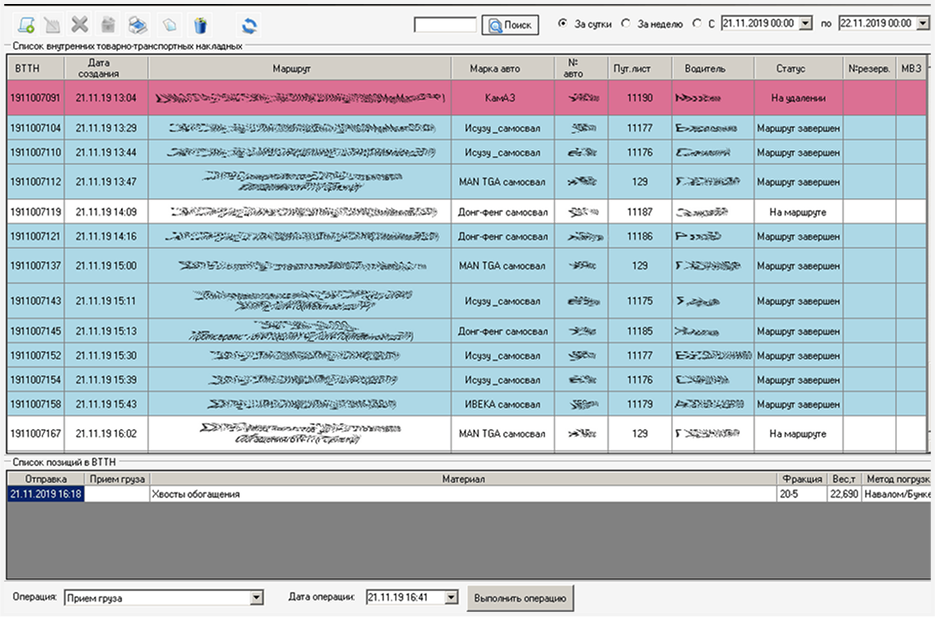
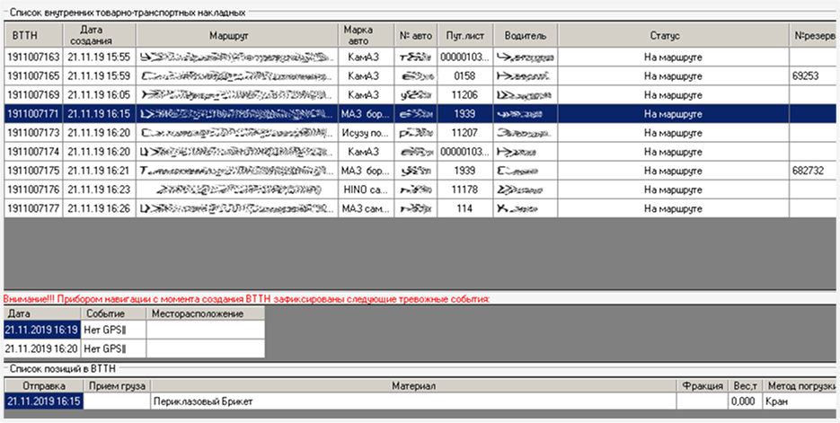
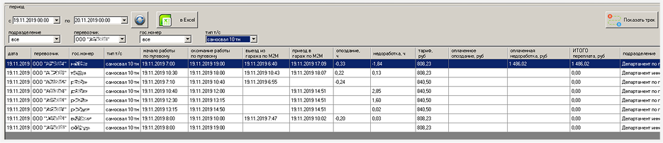
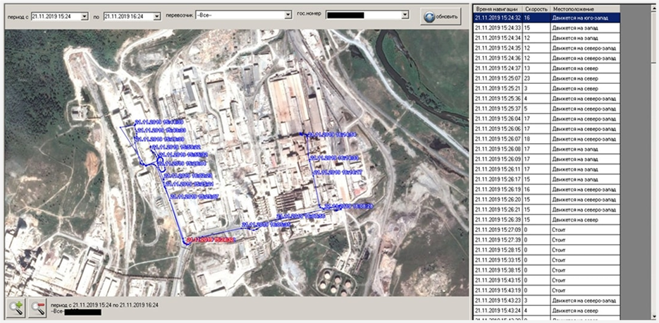

Система контроля работы автотранспорта и учета перевозимых грузов

Система позволяет:
- Вести учет перевозимых материалов (насыпных и в таре) с использованием автомобильных и ж/д весов
- Формировать различные первичные документы (путевые листы, ТТН и т.п.)
- Осуществлять контроль за работой и перемещениями автотранспорта с помощью средств спутниковой навигации
- Подключать различное оборудование (весы, сканеры штрих-кодов, транспондеры и т.п.)
- Обмениваться данными с различными системами (SAP, 1C и т.д.)
- Формировать отчеты по перевозкам в различных ракурсах.
Скриншоты программы
АРМ весовщика - предназначено для взвешивания автотранспорта в различных режимах в зависимости от типа документа на перевозку:

АРМ ВТТН - модуль, предназначенный для создания документа на перевозку внутри предприятия:

АРМ весовщика - предназначено для взвешивания автотранспорта в различных режимах в зависимости от типа документа на перевозку:
Модуль для контроля автотранспорта, проходящего через КПП. Имеет функцию отображения аварийных событий системы навигации, произошедших с момента создания документа на отгрузку:

Отчет для анализа соответствия данных путевых листов и реальных перемещений автотранспорта:

Модуль для контроля перемещения автотранспорта на основании данных навигации
